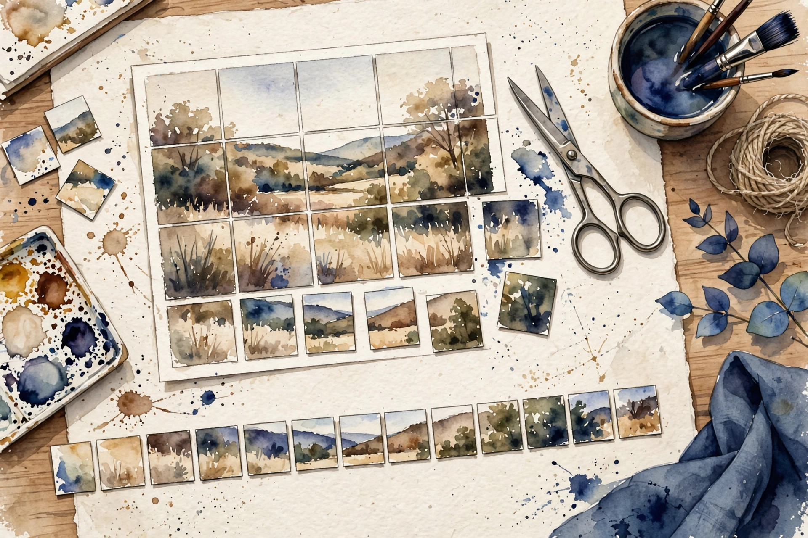
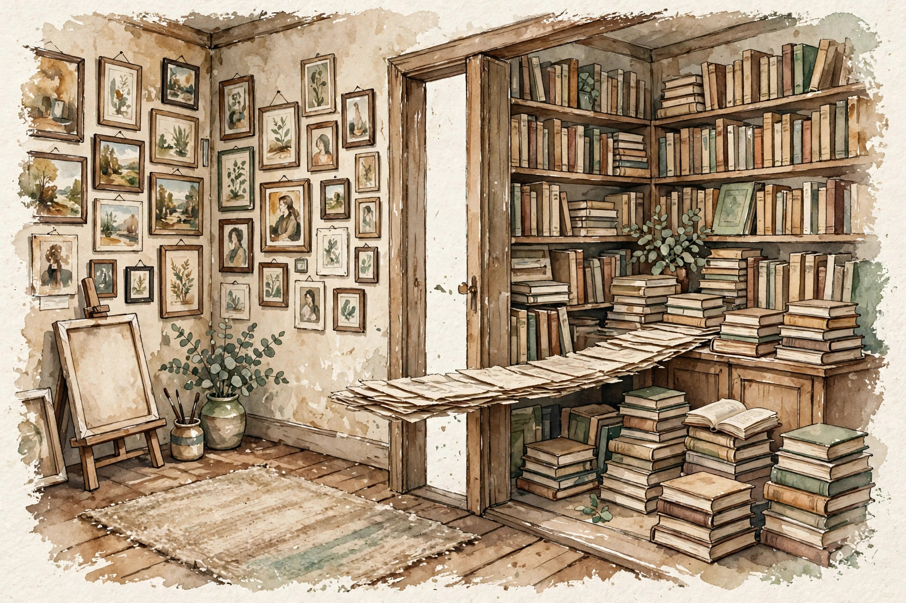
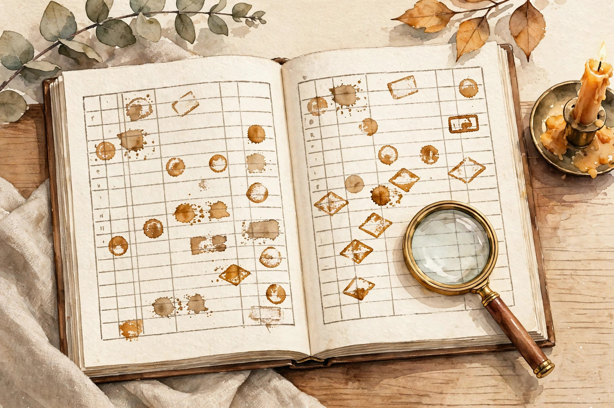

CS224N · Companion artifact U14 of 15
A second sense: images next to text. The last three sections are about honesty itself: how to handle guest research you have not inspected.
“From the lesson” marks facts from lessons/u14_multimodality_guest.md. “Illustration” marks interactive toys that run the lesson’s rules over tiny inputs. “Companion” marks advice from the companion author. Sections C10 to C12 follow the lesson’s own honesty protocol for uninspected material: cards, not claims. Tags after each section name the lesson leaf, for example C04.

Section 1 · C01
From the lessonC01 §2, §3
The model reads text as tokens. What is an image to it? The vision encoder is a translator: pixels in, tokens out. After translation the transformer cannot tell which tokens came from eyes and which from text. That blindness is the point. The mechanism is the patchify: reshape the image into N patches, flatten, project to d. Position embeddings mark the grid.
From the lessonC01 §4, §5
Hand-set toy, labeled as such: a 224x224 image cut into 16x16 patches: 224/16 = 14 per side, 196 patch tokens, each a linear projection of pixels. The image becomes a sentence of 196 "words". At d = 1024, the image is 196 tokens before a word is read.
From the lessonC01 §11
The broken assumption is that the grid preserves detail. Small text in the image blurs past reading at 16x16. Resolution is a choice, not a given.
Translate every modality to tokens and the stack stays unified. The blindness of the transformer to token origins is the design.
Illustration The patchify machine. The grid rule is C01’s. The image size is yours. Prefilled with the lesson toy.
image side
patch side
Section 2 · C02
From the lessonC02 §2, §3
Do image and text mix at the input or at the output? Early fusion is one room: both modalities enter the same stack as tokens. Late fusion is two rooms with a door: separate towers, joined by projections at the end.
From the lessonC02 §4, §5
From compute_u14.py: early fusion adds 0 extra params (the shared stack does the work). Late fusion adds 2 projections per layer: 2 d^2 L = 5.03e7 at d = 1024, L = 24. On a 7B model that is 0.7 percent: small but not free.
From the lessonC02 §11
The broken assumption is that early fusion is always cheaper. The image tokens bloat every layer's attention to n^2. Params are not the only bill.

compute_u14.py (executed 2026-10-06): early 0, late 5.03e7. Log scale.The meeting point has a price in params and in attention. Early is tight, late is modular: choose by the integration you need.
Illustration The fusion pricer. The 2 d^2 L rule is C02’s. The sizes are yours. Prefilled with the lesson toy.
d
layers L
Section 3 · C03
From the lessonC03 §2, §3
The input is an image plus a question. What does the model see first? The stream is a mixed tape: image tokens, then text, or interleaved. Share = image tokens over total. In a causal model, put the image first so the text can attend to it.
From the lessonC03 §4, §5
From compute_u14.py: 256 image tokens + 512 text tokens = 768, image share 0.333. A third of the window is vision.
From the lessonC03 §11
The broken assumption is that order does not matter. Text before image in a causal model: the question cannot see the image. Order is architecture.
compute_u14.py (executed 2026-10-06): 256 image + 512 text, image share 0.333.Images eat the window first. Budget the tokens, and put the image where the question can see it.
Illustration The budget meter. The share rule is C03’s. The counts are yours. Prefilled with the lesson toy.
image tokens
text tokens
Section 4 · C04
From the lessonC04 §2, §3
The model writes a caption and draws the image. How? Joint generation is two craftsmen sharing a shop: the text engine writes, the image engine draws, and they must agree on the subject. Agreement is the hard part.
From the lessonC04 §4, §5
From compute_u14.py: autoregressive text (128 tokens at cost 1) plus diffusion image (20 steps at cost 8): 128 + 160 = 288. The image costs more than the text. The mechanism is the schedule: generate text, condition the image on it (or jointly).
From the lessonC04 §11
The broken assumption is that the modalities agree. The caption says "red car", the image shows blue. Joint training, not just joint billing, fixes agreement.
compute_u14.py (executed 2026-10-06): text 128, image 160, total 288.Two engines, one bill, and agreement is the hard part. Joint billing does not buy joint agreement.
Section 5 · C05
From the lessonC05 §2, §3
Text is autoregressive, images are diffusion. Why? Text has a natural order (left to right), images do not. The paradigm follows the data's structure. Autoregression tells a story: one token at a time, each conditioned on the past. Diffusion sculpts: start from noise, refine everywhere at once. Stories need order, pictures need global coherence.
From the lessonC05 §4, §5
Hand-set toy, labeled as such: AR text at 128 tokens, diffusion at 20 steps. The text is the plan, the image is the execution. AR factorizes the joint as a product of conditionals. Diffusion learns to reverse a noise process. The interface: AR text conditions the diffusion.
From the lessonC05 §11
The broken assumption is that the paradigms compose cleanly. The diffusion may ignore the AR text (weak conditioning). Strengthen the conditioning, measure agreement.
Match the generative paradigm to the data's structure. Ordered data gets stories, unordered data gets sculpting.
Section 6 · C06
From the lessonC06 §2, §3
One stack for both senses, or specialists? Experts are specialists, the router is the receptionist. Image tokens go to image experts, text to text experts. If the receptionist naps, one expert does everything: collapse.
From the lessonC06 §4, §5
From compute_u14.py: 8 experts (4 image, 4 text), 10 tokens routed as [3,2,3,2,3,2,2,3], aux loss 1.04. Aux = mean((load / mean)^2). Perfect balance gives 1.0. Near 1.0: healthy, no collapse.
From the lessonC06 §11
The broken assumption is that the router balances. With aux weight 0, one expert takes all. The aux loss is load-bearing.
compute_u14.py (executed 2026-10-06): [3,2,3,2,3,2,2,3], aux 1.04. Balanced.The aux loss is load-bearing. Without it the router collapses to one expert and the specialists starve.
Illustration The balance meter. The aux rule is C06’s. The loads are yours. Prefilled with the lesson toy.
loads (comma separated)
Section 7 · C07
From the lessonC07 §2, §3
The query is text, the answer is an image. How do they meet? U09 C07's fusion, across senses: embed text and images into one space, score by similarity. The weight w dials which sense leads. Fused = w times image + (1 - w) times text.
From the lessonC07 §4, §5
From compute_u14.py: text score 0.72, image score 0.41, fused at w = 0.5: 0.565. w = 0.0 gives 0.720, w = 1.0 gives 0.410. Tune w on a dev set.
From the lessonC07 §11
The broken assumption is that the space aligns. The text query may match the wrong image's caption-like region. Alignment needs the training. Check it.
compute_u14.py (executed 2026-10-06): 0.720 at w=0.0, 0.565 at w=0.5, 0.410 at w=1.0.The joint space is the meeting room, and the weight dials which sense leads. Sweep it and check the index.
Section 8 · C08
From the lessonC08 §2, §3
The model sees images and text. How does it learn to answer questions? Instruction tuning is the same school, new students: instruction triples (image, question, answer), SFT loss on the answer tokens, same recipe as U07, new modality. The gradients reach the vision encoder through the stack.
From the lessonC08 §4, §5
Hand-set toy, labeled as such: 10k triples, loss falls, VQA accuracy rises 0.12. The format teaches the task.
From the lessonC08 §11
The broken assumption is that tuning teaches vision. The model may learn to answer from the text alone, ignoring the image (the language prior). Test with image-ablated inputs.
Instruction tuning is the same school with new students. Test that the vision was learned, not bypassed: ablate the image.
Section 9 · C09
From the lessonC09 §2, §3
The model describes an image. Who grades it? U10 C03's judge, new modality: the judge must see the image too. A blind judge grades text, not the pair. The mechanism is U10 C03's: kappa for agreement, Brier for calibration.
From the lessonC09 §4, §5
Hand-set toy, labeled as such: a judge model scores 100 descriptions, agrees with humans at kappa 0.55 with the image, 0.31 without. The 0.55 is U10's number, reused honestly. The 0.31 is illustrative. The judge is an instrument. Calibrate it.
From the lessonC09 §11
The broken assumption is that the judge sees what the model saw. Different resolutions, different crops. Match the inputs.
The judge is an instrument: it must see what the model saw. Calibrate it and match its inputs.
Section 10 · C10
From the lessonC10 §2, §3, §4
The leaf names a guest artifact. What do you teach? The card reads: "title: guest Tinker/LoRA artifacts (inventory label), content: not inspected, claims: none". The card is the whole lesson. A title is a pointer to work you have not seen. Teaching the pointer honestly means saying what it points at (unknown) and how you would verify it (the artifact list).
From the lessonC10 §11
The broken assumption is that "Tinker" means the product. The label could be a codename, a demo, or a typo. Do not resolve ambiguity by guessing.
From the lessonC10 §9
No new math. The mechanism is the boundary: the leaf stays open until an artifact is inspected. C12 tracks it.
Reading card · guest Tinker/LoRA artifacts
The card is the whole lesson. When the material is uninspected, the honest move is a card, not a claim.
Section 11 · C11
From the lessonC11 §2, §3, §4
Someone says "the guest showed X". How do you check? Three classes: (a) inspected artifact, (b) schedule title, (c) hearsay. "The guest showed X" needs (a). The schedule gives (b). Everything else is (c). The mechanism is the routing: each claim about a talk gets a class, each class has a citation format. Demote on doubt.
From the lessonC11 §11
The broken assumption is that the schedule title is the talk. Tentative schedules change (the course says so). The title is a plan, not a transcript.
Illustration The passport check. The classes are C11’s. The claims are yours to test. Try the lesson’s examples first.
Section 12 · C12
From the lessonC12 §2, §3, §4
What is still unknown after this unit? The ledger, hand-set and labeled as such: S20 talk content (uninspected), Tinker/LoRA artifacts (uninspected), all C01 to C09 mechanisms (requested-branch, toy-taught). Each with its closure rule. Every open item names what would close it.
From the lessonC12 §11
The broken assumption is that the ledger is complete. The gap you forgot is the risk. The audit (a different agent) checks.
From the lessonC12 §5
From compute_u14.py: U14 has 12 leaves, all class REQUESTED-BRANCH, total 12.

Gap ledger · U14 (hand-set, from the lesson)
compute_u14.py (executed 2026-10-06): 12 requested-branch.Wisdom index